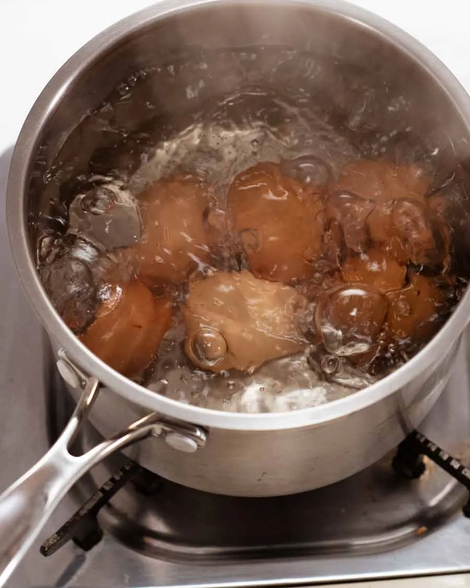

<h1>
    Boiled Eggs
</h1>

<p>
    Basic boiled eggs.
</p>
<p>
    Ingredients:
    <ul>
        <li>Any number of cold eggs</li>
    </ul>
</p>
<p>
    Steps
    <ol>
        <li>Boil water.</li>
        <li>Lower eggs in the water when boiling.</li>
        <li>Lower heat.</li>
        <li>Start timer for 6 minutes.</li>
        <li>Transfer into a large bowl of cold water.</li>
        <li>Peel under water.</li>
    </ol>
</p>